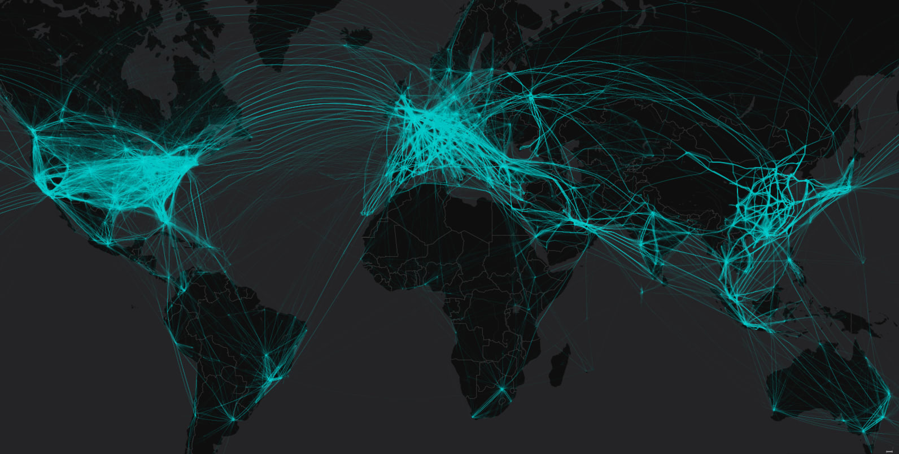
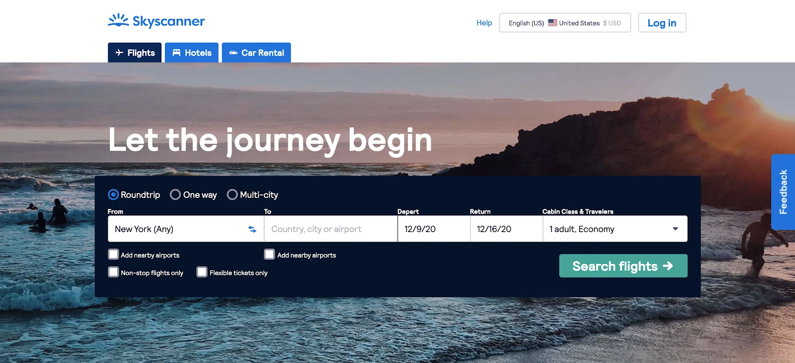
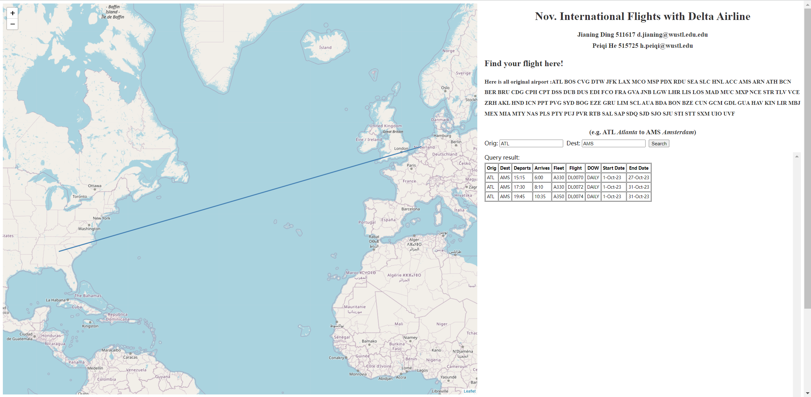

Final Project Process Book
Name: Jianing Ding; E-Mail: d.jianing@wustl.edu.edu; UID: 511617
Name: Peiqi He; E-Mail: h.peiqi@wustl.edu; UID: 515725
Background and Motivation
The goal of this project is to enhance the travel planning experience for Delta Air Lines' frequent flyers
by creating an interactive visualization of international flights operated by Delta in October. The motivation
is to provide a user-friendly tool for members to efficiently redeem their points and select the most convenient
flights based on location, time, and other specific preferences.
Related Work

This project is inspired by various flight visualization tools and heat maps that showcase global flight
patterns. Resources such as the 'FlightRadar24' website and academic papers on GIS (Geographic Information
System) applications in aviation have informed our approach. Discussions in class about interactive data
visualization have also played a pivotal role in shaping our design.
Questions
1. Where do international Delta flights depart from and arrive at?
2. What are the specific dates, times, and frequencies of these flights?
3. Which direct international routes are available?
Throughout the project, these questions evolved to consider the user experience and the visual
representation of data. New questions included how to make the visualization more interactive and
informative, such as incorporating a search function or showing flight details on hover.
Data
The data was sourced from Delta Air Lines' international flight schedule, available at Delta's official
website. The initial dataset was in an Excel format, which was cleaned and processed to enhance readability
and utility.
Exploratory Data Analysis:
Initial visualizations included basic maps with plotted routes. Insights from these early visualizations
indicated the need for a more interactive approach, leading to the adoption of GeoJSON for more sophisticated
geographic representations.
Design Evolution:
1. A global map highlighting routes between the selected country and America.

2. A design showing all routes from a chosen departure city.
3. A searchable map allowing users to input departure and arrival cities to display corresponding routes.

The final design chosen was the third option, providing a balance between interactivity and information
clarity.
Implementation:

The interactive visualizations are grounded on a GeoJSON-powered global map, with search functionality allowing
users to discover direct flight routes by entering departure and arrival cities. The map provides a
comprehensive view of Delta's international routes, aiding travelers in efficient trip planning.
Evaluation:
The visualizations revealed patterns and insights such as key hubs for Delta and the most frequent international
routes. The effectiveness of the visualization was confirmed through user engagement, and future improvements
could include adding real-time flight status updates or incorporating user feedback mechanisms.
In addressing these points, you'll want to elaborate on each section based on the details of your project and
ensure you include images and references to the visualizations you've created, which can effectively support
your descriptions of the design and implementation.